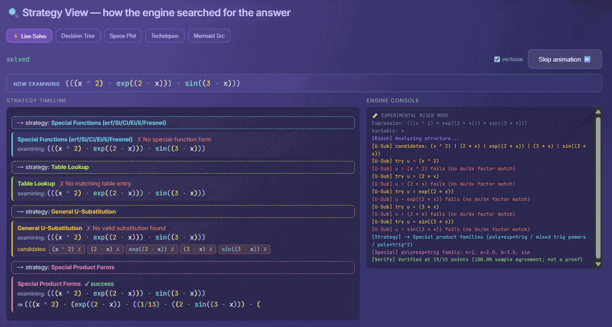
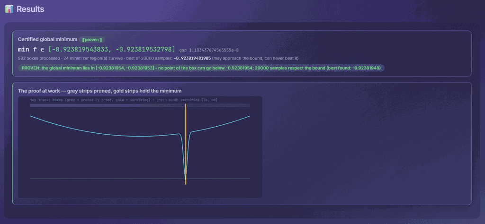
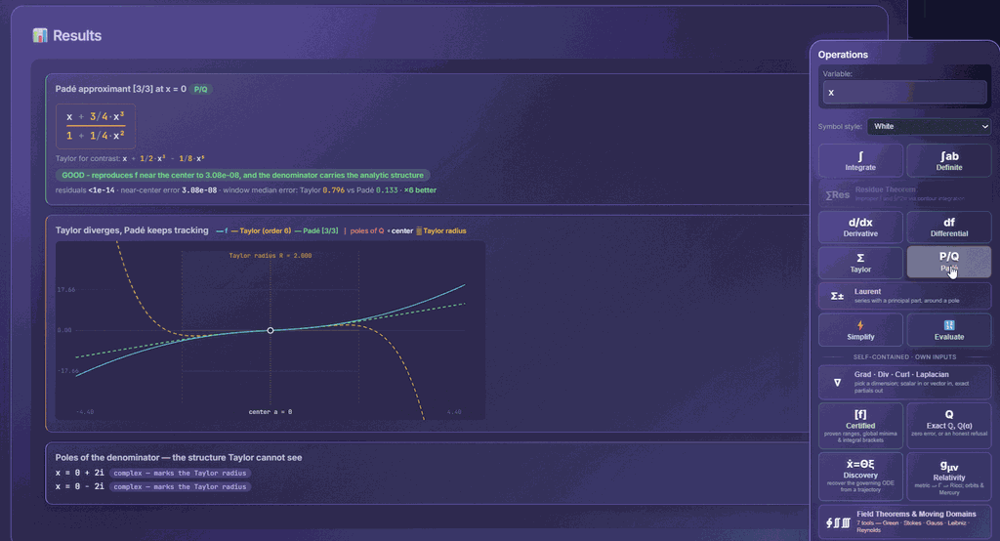

Interactive application Experimental
Interactive Video
Overview · selected highlights
Symbolic Unfolded
A Ruby algebra workbench that searches for a symbolic route through an expression, then attaches evidence to the answer. Substitutions, identities and integration by parts sit alongside residues, exact arithmetic and vector calculus, with expression trees exposing the structure.
ParseTransformExplain
- ƒ
Read the structure
Parse an expression into a tree with explicit arithmetic domains.
- ∫
Find a route
Try transformations, rational decomposition and integration strategies.
- ∂
Check the answer
Differentiate candidate integrals and inspect symbolic or sampled verification.
- ∮
Change the domain
Explore residues and other methods when elementary manipulations are insufficient.
A rule-based symbolic engine with inspectable evidence, rather than a complete Risch implementation.


